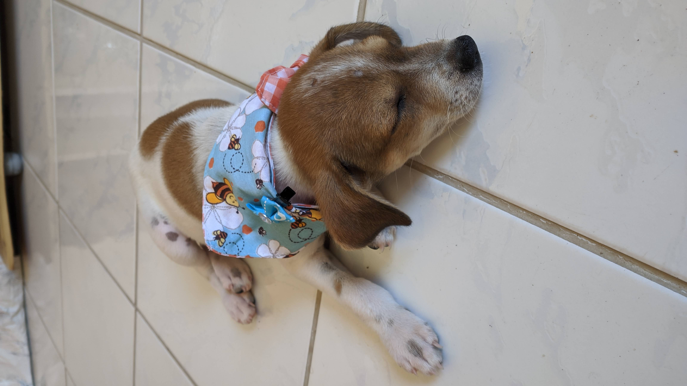

Vem conhecer minha história!!
Olá aumiguinhos, meu nome é Monalisa Estevão de Mendonça, mas podem me chamar de Mona! Fui resgatada de um lixão, junto com meus 5 irmãos, por um "anjo" chamado Franciele (minha amada Dinda), que cuidou de mim e me preparou para a adoção. Meu irmão viu minha foto no instagram e mostrou a minha mãe, Cláudia Estevão, que logo se apaixonou, entrou em contato com minha dinda e marcou para me conhecer. Ao me ver ela chorou e percebeu que já me amava mesmo sei me conhecer. Assim ela me trouxe para a minha nova casa, novo lar e nova familia. Fez uma surpresa me colocando numa caixa com laço de fita, como se eu fosse um presente... E fui mesmo. Ao chegar lá foi muita emoção, meu irmão chorou ao me conhecer, meu papai ficou confuso, mas logo me aceitou, e depois de alguns minutos os três estavam sentados no chão, feito bobos a escolher meu nome, e foi assim que eu me tornei uma obra de arte, uma verdadeira Monalisa!

Minha família que amo!
Tem minha mamãe, Cláudia; meu papai, Ton e meu irmãozinho Rafael. Aqui na minha casinha eu sou muito amada e mimada, tenho tudo que preciso para ser feliz e retribuo tudo isso com amor, carinho, brincadeiras e muitos lambeijos!
Minha rotina!
O que mais gosto de fazer é dá um rolê com meus papis, fuçar, comer grama, brincar com aumiguinhos; amo um dia de praia, passeio de baike, minha creche. O que me deixa estressada é ir ao médico, já não aguento mais tanta picadinha, mas sei que é para o meu bem e minha família só quer que eu tenha saúde para que eu seja muito feliz.
.jpeg)
.jpeg)
Momentos que amo de montão:
A minha família é muito animada e minha mãe sempre tem um roupitcha para me deixar mais linda em momentos incríveis da vida como, carnaval, são joão, natal, copa do mundo e o melhor, meu aniversário!
Meu melhor aumigo!
Eu tenho muitos aumiguinhos, amo todos, mas o meu preferido é Popó, um polvo que veio da China para ser meu cãopanheiro e me fazer muito feliz. Dizem que é "indestrutível", hahaha... Ele não me conhece!
Melhores momentos da minha vida!
Meu primeiro dia no vet, um dia na creche com os tios e aumigos, meu primeiro auniversário que faço em 25/12. Quem escolheu essa data foi meu médico, por não saber o dia do nascimento achou melhor dizer que o dia que nasci foi um presente para minha família, por isso ficou o dia de Natal!